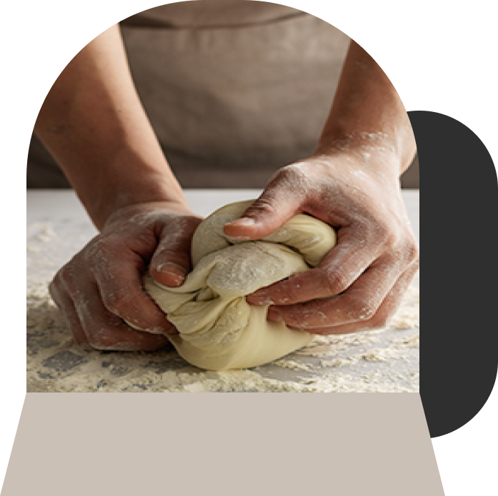
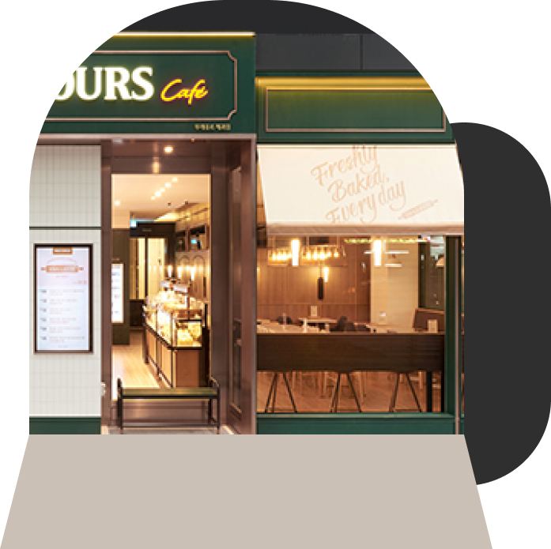
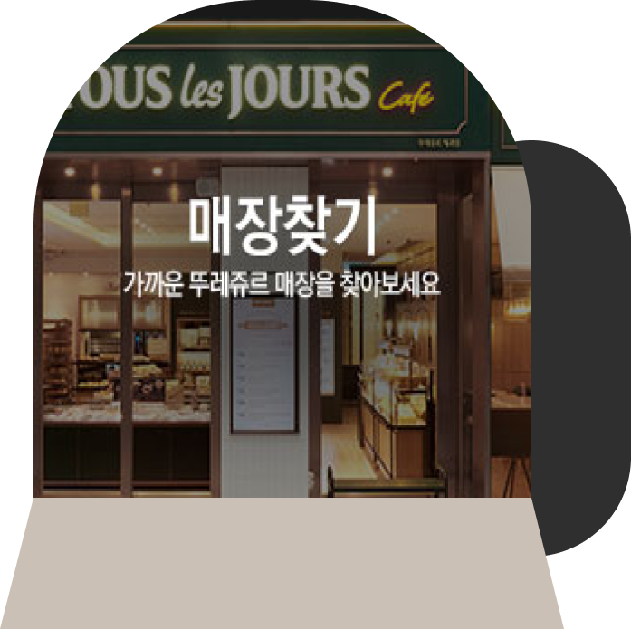

Brand List

매일매일 (Tous Les Jours) ,
매장에서 직접 굽는 신선한 베이커리
뚜레쥬르는(Tous Les Jours - 프랑스어로 “매일매일” 이라는 뜻) 그 이름의 의미처럼 매일매일 매장에서 직접 굽는 신선함을 가장 큰 가지로 하는 베이커리 입니다.
01 / 07

갓 구운 신선함이
매장을 가득 채웁니다.
오븐에서 방금 꺼낸 빵이 가장 맛있다는 것을 알기에, 뚜레쥬르는 지금도 더욱 따뜻하고 촉촉한 갓 구운 빵을 제공하기 위해 끊임없이 노력합니다.
02 / 07

좋은 밀가루를 만드는 회사의
베이커리 브랜드
좋은 밀가루도 좋은 빵의 맛을 내는 중요한 요소입니다. 뚜레쥬르는 CJ제일제당의 깐깐한 60년 제분 기술 노하우가 축적된 밀가루로 빵을 만드는 베이커리 입니다.
03 / 07

선별된 좋은 재료를 사용하여
더욱 건강한 제품을 제공하고자 합니다.
소중한 가족과 이웃에게 드리는 빵이기에, 뚜레쥬르의 빵과 케이크는 들어가는 모든 재료를 하나 하나 꼼꼼히 선별해서 사용합니다.
04 / 07

본질을 지키는 것은 기본,
더 나아가 혁신적인 변화로 업계를 선도합니다.
매일매일, 하루 3번 매장에서 직접 빵을 굽는 일. 다른 베이커리에서 쉽게 도전하지 못했던 혁신적인 시도로 베이커리 시장에 첫 발을 내딛은 뚜레쥬르.
05 / 07

좋은 재료로 만들어 건강하고,
매장에서 갓 구워 신선한 빵과 케이크를 만날 수 있는 곳.
"여기는 신선함이 가득한 베이커리, 뚜레쥬르입니다."
06 / 07


Store List
매장 찾기